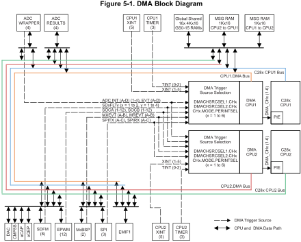
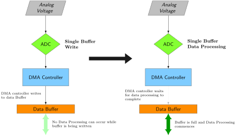
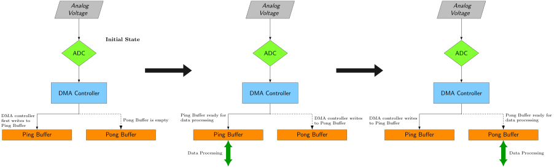
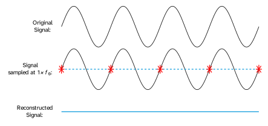
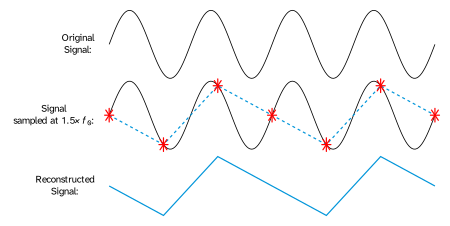
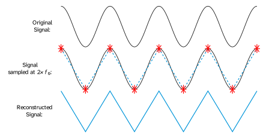
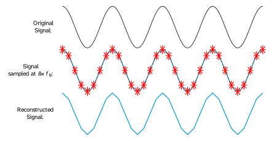
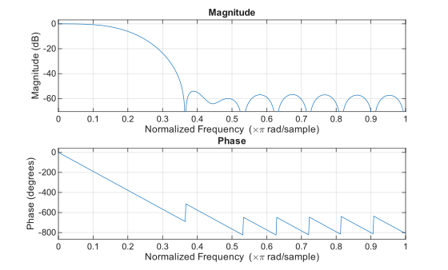
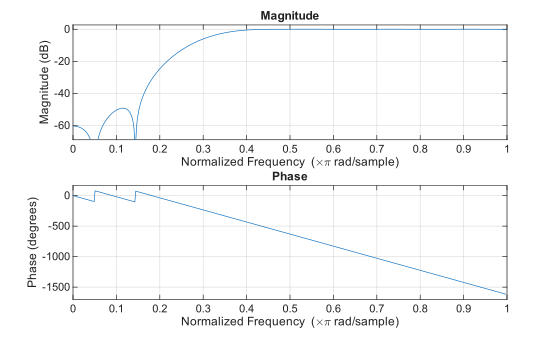
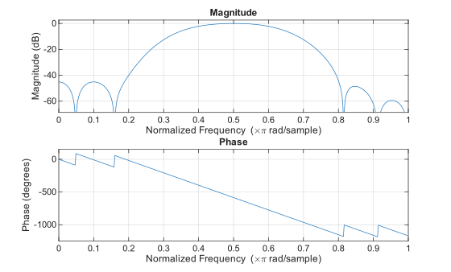

1. SE 423: Introduction to MechatronicsLecture 8-9: FFT and FiltersMarius Juston
Monday, February 16th, 2026
2. Reminders
Office Hours:
- Monday: 4-6 PM, Neel
- Tuesday: 11-1 PM, Lakshmi
- Tuesday: 1-3 PM, Samuel
- Tuesday: 2-5 PM, Dan & Marius
Lab: Starting Lab 3 this week. This a 2-week lab!
Homeworks:
- Check-offs for homework 2 Ex 1 & 2 are due February 17, 5PM (The end of office hours)
- Check-offs for homework 2 Ex 3 & 4 are due February 24, 5PM (The end of office hours)
- Answers and code submissions for homework 2 are due February 25, 9AM
LabVIEW:
- All check-offs for LabVIEW 2 are due February 26, 5PM
3. Questions?
Homework, Lab, LabVIEW questions?
4. Fourier Transforms & FFTBackground
5. Fourier Transforms
YouTube video: But what is the Fourier Transform? A visual introduction. (3Blue1Brown)
6. FFT
YouTube video: The Fast Fourier Transform (FFT): Most Ingenious Algorithm Ever? (Reducible)
7. Fourier Transforms & FFTCode
8. FFT Code
You just watched a couple of videos all about what a Fourier transform is, and what the FFT is…
Time to implement it!
Just joking, smart people have already implemented the algorithms and optimized it to work with this specific hardware to be as efficient as possible.
This one was implemented to work in C++ and C.
9. FFT Code
#define RFFT_STAGES 10
#define RFFT_SIZE (1 << RFFT_STAGES) // 1024
#pragma DATA_SECTION(pwrSpec, "FFT_buffer_2")
float pwrSpec[(RFFT_SIZE/2)+1];
float maxpwr = 0;
int16_t maxpwrindex = 0;
#pragma DATA_SECTION(test_output, "FFT_buffer_2")
float test_output[RFFT_SIZE];
#pragma DATA_SECTION(fft_input, "FFT_buffer_1")
float fft_input[RFFT_SIZE];
#pragma DATA_SECTION(RFFTF32Coef,"FFT_buffer_2")
float RFFTF32Coef[RFFT_SIZE];
#pragma DATA_SECTION(AdcPingBufRaw, "FFT_buffer_2")
uint16_t AdcPingBufRaw[RFFT_SIZE];
#pragma DATA_SECTION(AdcPongBufRaw, "FFT_buffer_2")
uint16_t AdcPongBufRaw[RFFT_SIZE];
RFFT_F32_STRUCT rfft;
RFFT_F32_STRUCT_Handle hnd_rfft = &rfft;
uint16_t pingFFT = 0;
uint16_t pongFFT = 0;
uint16_t pingpongFFT = 1;
uint16_t iPingPong = 0;
int16_t DMAcount = 0;
__interrupt void DMA_ISR(void);
void InitDma(void);
typedef struct {
float *InBuf; //!< Pointer to the input buffer
float *OutBuf; //!< Pointer to the output buffer
float *CosSinBuf; //!< Pointer to the twiddle factors
float *MagBuf; //!< Pointer to the magnitude buffer
float *PhaseBuf; //!< Pointer to the phase buffer
uint16_t FFTSize; //!< Size of the FFT (number of real data points)
uint16_t FFTStages; //!< Number of FFT stages
} RFFT_F32_STRUCT;
typedef RFFT_F32_STRUCT* RFFT_F32_STRUCT_Handle;
Speaker notes
In a standard Radix-2 Cooley-Tukey algorithm, the computation is broken down into $\log_2(N)$ stages. Thus, an $N=1024$ point FFT requires exactly 10 stages of butterfly operations. This reduces the computational complexity from $O(N^2)$ for a naive Discrete Fourier Transform (DFT) to $O(N \log_2 N)$, which is mathematically necessary for real-time latency constraints in embedded control systems
The pragma puts the specific data into different distinct physical RAM blocks. If fft_input and RFFTF32Coef (the twiddle factors) were in the same memory block, the CPU would stall due to bus contention, requiring two clock cycles to fetch the operands. By placing them in separate blocks, the DSP core can fetch both operands in a single clock cycle, effectively halving the execution time of the butterfly loops.
We only need to store N/2 + 1 points because for the strictly real-valued inputs the spectrum is mirrored at index N-k, because you have the complex conjugate, the magnitudes are the same.
We have ping pong buffers, for establishing double-buffering, the peripherials write using Direct Memory Access DMA) the raw ADC data to the buffer, and the CPU does the RFFT on the data in the second buffer. You keep on switching buffers. Allowing zero dropped samples.
10. FFT Code
EALLOW; // This is needed to write to EALLOW protected registers
PieVectTable.DMA_CH1_INT = &DMA_ISR;
EDIS; // This is needed to disable write to EALLOW protected registers
11. Direct Memory Access (DMA)
12. DMA
The direct memory access (DMA) module provides a hardware method of transferring data between peripherals and/or memory without intervention from the CPU, thereby freeing up bandwidth for other system functions.
Many times, applications spend a significant amount of their bandwidth moving data,whether it is from off-chip memory to on-chip memory, or from a peripheral such as an analog-to-digital converter (ADC) to RAM, or even from one peripheral to another.
Furthermore, many times this data comes in a format that is not conducive to the optimum processing powers of the CPU.
The DMA module described in this reference guide can free up CPU bandwidth and rearrange the data into a pattern for more streamlined processing.
13. DMA
DMA features include:
- Six channels with independent PIE interrupts
- Each DMA channel can be triggered from multiple peripheral trigger sources independently
- Word Size: 16-bit or 32-bit (SPI limited to 16-bit)
- Throughput: 3 cycles/word without arbitration
The DMA has an 8-bit trigger source selection (“255 options”). The trigger sources range from the ADC, XINT, ePWM, Timer interrupts, SPI and more.
14. FFT Code

15. FFT Code – Ping Pong Buffer
__interrupt void DMA_ISR(void) // PIE7.1 @ 0x000DA0 DMA channel 1 interrupt
{
PieCtrlRegs.PIEACK.all = PIEACK_GROUP7; // Must acknowledge the PIE group
//--- Process the ADC data
if(iPingPong == 0) // Ping buffer filling, process Pong buffer
{
// Manage the DMA registers
EALLOW; // Enable EALLOW protected register access
DmaRegs.CH1.DST_ADDR_SHADOW = (Uint32)AdcPongBufRaw; // Adjust DST start address for Pong buffer
EDIS; // Disable EALLOW protected register access
// Don't run ping FFT first time around
if (DMAcount > 0) {
pingFFT = 1;
}
iPingPong = 1;
}
else // Pong buffer filling, process Ping buffer
{
// Manage the DMA registers
EALLOW; // Enable EALLOW protected register access
DmaRegs.CH1.DST_ADDR_SHADOW = (Uint32)AdcPingBufRaw; // Adjust DST start address for Ping buffer
EDIS; // Disable EALLOW protected register access
pongFFT = 1;
iPingPong = 0;
}
DMAcount += 1;
}
Speaker notes
All shadow registers are copied to active registers.
16. Ping Pong Buffer
17. FFT Code – Ping Pong Buffer

Speaker notes
All shadow registers are copied to active registers.
18. FFT Code – Ping Pong Buffer

If this is not animated, I did not have the time to create it.
Speaker notes
All shadow registers are copied to active registers.
19. Fourier Transforms & FFTCode
20. FFT Code - Setup
EALLOW;
EPwm7Regs.ETSEL.bit.SOCAEN = 0; // Disable SOC on A group
EPwm7Regs.TBCTL.bit.CTRMODE = 3; // freeze counter
EPwm7Regs.ETSEL.bit.SOCASEL = 0x2; // Select Event when counter equal to PRD
EPwm7Regs.ETPS.bit.SOCAPRD = 0x1; // Generate pulse on 1st event
EPwm7Regs.TBCTR = 0x0; // Clear counter
EPwm7Regs.TBPHS.bit.TBPHS = 0x0000; // Phase is 0
EPwm7Regs.TBCTL.bit.PHSEN = 0; // Disable phase loading
EPwm7Regs.TBCTL.bit.CLKDIV = 0; // divide by 1 50Mhz Clock
EPwm7Regs.TBPRD = 5000; // Set Period to 0.1ms sample. Input clock is 50MHz.
EPwm7Regs.ETSEL.bit.SOCAEN = 1; // Enable SOC on A group
// Notice here that we are not setting CMPA or CMPB because we are not using the PWM signal EPwm7Regs.ETSEL.bit.SOCAEN = 1; //enable SOCA
EPwm7Regs.TBCTL.bit.CTRMODE = 0x00; //unfreeze, and enter up count mode
EDIS;
21. FFT Code - Setup
EALLOW;
//write configurations for all ADCs ADCA, ADCB, ADCC, ADCD
AdcaRegs.ADCCTL2.bit.PRESCALE = 6; //set ADCCLK divider to /4
AdcbRegs.ADCCTL2.bit.PRESCALE = 6; //set ADCCLK divider to /4
AdccRegs.ADCCTL2.bit.PRESCALE = 6; //set ADCCLK divider to /4
AdcdRegs.ADCCTL2.bit.PRESCALE = 6; //set ADCCLK divider to /4
AdcSetMode(ADC_ADCA, ADC_RESOLUTION_12BIT, ADC_SIGNALMODE_SINGLE); //read calibration settings
AdcSetMode(ADC_ADCB, ADC_RESOLUTION_12BIT, ADC_SIGNALMODE_SINGLE); //read calibration settings
AdcSetMode(ADC_ADCC, ADC_RESOLUTION_12BIT, ADC_SIGNALMODE_SINGLE); //read calibration settings
AdcSetMode(ADC_ADCD, ADC_RESOLUTION_12BIT, ADC_SIGNALMODE_SINGLE); //read calibration settings
//Set pulse positions to late
AdcaRegs.ADCCTL1.bit.INTPULSEPOS = 1;
AdcbRegs.ADCCTL1.bit.INTPULSEPOS = 1;
AdccRegs.ADCCTL1.bit.INTPULSEPOS = 1;
AdcdRegs.ADCCTL1.bit.INTPULSEPOS = 1; //power up the ADCs
AdcaRegs.ADCCTL1.bit.ADCPWDNZ = 1;
AdcbRegs.ADCCTL1.bit.ADCPWDNZ = 1;
AdccRegs.ADCCTL1.bit.ADCPWDNZ = 1;
AdcdRegs.ADCCTL1.bit.ADCPWDNZ = 1; //delay for 1ms to allow ADC time to power up
DELAY_US(1000);
//ADCB
AdcbRegs.ADCSOC0CTL.bit.CHSEL = 4; //SOC0 will convert Channel you choose Does not have to be B0, ADCIN4
AdcbRegs.ADCSOC0CTL.bit.ACQPS = 99; //sample window is acqps + 1 SYSCLK cycles = 500ns
AdcbRegs.ADCSOC0CTL.bit.TRIGSEL = 0x11; // EPWM7 ADCSOCA or another trigger you choose will trigger SOC0
AdcbRegs.ADCINTSEL1N2.bit.INT1SEL = 0; //set to last SOC that is converted and it will set INT1 flag ADCB1
AdcbRegs.ADCINTSEL1N2.bit.INT1E = 1; //enable INT1 flag, originally = 1 (need to set to 1 for non-DMA)
AdcbRegs.ADCINTFLGCLR.bit.ADCINT1 = 1; //make sure INT1 flag is cleared
AdcbRegs.ADCINTSEL1N2.bit.INT1CONT = 1; // Interrupt pulses regardless of flag state
EDIS;
// Initialize DMA
InitDma();
22. FFT Code - Setup
void InitDma(void)
{
EALLOW;
//--- Overall DMA setup
DmaRegs.DMACTRL.bit.HARDRESET = 1; // Reset entire DMA module
asm(" NOP"); // 1 cycle delay for HARDRESET to take effect
DmaRegs.DEBUGCTRL.bit.FREE = 1; // 1 = DMA unaffected by emulation halt
DmaRegs.PRIORITYCTRL1.bit.CH1PRIORITY = 0; // Not using CH1 Priority mode
//--- Configure DMA channel 1 to read the ADC results
DmaRegs.CH1.MODE.all = 0x8901; //good
// 0x8901 = 1000 1001 0000 0001
// CHINTE = interrupt enabled
// CONTINUOUS = re-init after transfer complete
// PERINTE = peripheral interrupt trigger enabled
// Set Channel 1
//--- Select DMA interrupt source /******** TRIGGER SOURCE FOR EACH DMA CHANNEL (unlisted numbers are reserved) ********/
DmaClaSrcSelRegs.DMACHSRCSEL1.bit.CH1 = 6; // 0=none 6=ADCBINT1 12=ADCCINT2 18=ADCDINT3 32=XINT4 40=EPWM3SOCA 46=EPWM6SOCA 52=EPWM9SOCA 58=EPWM12SOCA 72=MREVTA 98=SD1FLT4 110=SPIRXDMAA 132=USBA_EPx_TX1
DmaClaSrcSelRegs.DMACHSRCSEL1.bit.CH2 = 0; // 1=ADCAINT1 7=ADCBINT2 13=ADCCINT3 19=ADCDINT4 33=XINT5 41=EPWM3SOCB 47=EPWM6SOCB 53=EPWM9SOCB 59=EPWM12SOCB 73=MXEVTB 99=SD2FLT1 111=SPITXDMAB 133=USBA_EPx_RX2
DmaClaSrcSelRegs.DMACHSRCSEL1.bit.CH3 = 0; // 2=ADCAINT2 8=ADCBINT3 14=ADCCINT4 20=ADCDEVT 36=EPWM1SOCA 42=EPWM4SOCA 48=EPWM7SOCA 54=EPWM10SOCA 68=TINT0 74=MREVTB 100=SD2FLT2 112=SPIRXDMAB 134=USBA_EPx_TX2
DmaClaSrcSelRegs.DMACHSRCSEL1.bit.CH4 = 0; // 3=ADCAINT3 9=ADCBINT4 15=ADCCEVT 29=XINT1 37=EPWM1SOCB 43=EPWM4SOCB 49=EPWM7SOCB 55=EPWM10SOCB 69=TINT1 95=SD1FLT1 101=SD2FLT3 113=SPITXDMAC 135=USBA_EPx_RX3
DmaClaSrcSelRegs.DMACHSRCSEL2.bit.CH5 = 0; // 4=ADCAINT4 10=ADCBEVT 16=ADCDINT1 30=XINT2 38=EPWM2SOCA 44=EPWM5SOCA 50=EPWM8SOCA 56=EPWM11SOCA 70=TINT2 96=SD1FLT2 102=SD2FLT4 114=SPIRXDMAC 136=USBA_EPx_TX3
DmaClaSrcSelRegs.DMACHSRCSEL2.bit.CH6 = 0; // 5=ADCAEVT 11=ADCCINT1 17=ADCDINT2 31=XINT3 39=EPWM2SOCB 45=EPWM5SOCB 51=EPWM8SOCB 57=EPWM11SOCB 71=MXEVTA 97=SD1FLT3 109=SPITXDMAA 131=USBA_EPx_RX1
//--- DMA trigger source lock
DmaClaSrcSelRegs.DMACHSRCSELLOCK.bit.DMACHSRCSEL1 = 0; // Write a 1 to lock (cannot be cleared once set)
DmaClaSrcSelRegs.DMACHSRCSELLOCK.bit.DMACHSRCSEL2 = 0; // Write a 1 to lock (cannot be cleared once set)
DmaRegs.CH1.BURST_SIZE.bit.BURSTSIZE = 0; // 0 means 1 word per burst
DmaRegs.CH1.TRANSFER_SIZE = RFFT_SIZE-1; // RFFT_SIZE bursts per transfer
DmaRegs.CH1.SRC_TRANSFER_STEP = 0; // 0 means add 0 to pointer each burst in a transfer
DmaRegs.CH1.SRC_ADDR_SHADOW = (Uint32)&AdcbResultRegs.ADCRESULT0; // SRC start address
DmaRegs.CH1.DST_TRANSFER_STEP = 1; // 1 = add 1 to pointer each burst in a transfer
DmaRegs.CH1.DST_ADDR_SHADOW = (Uint32)AdcPingBufRaw; // DST start address Ping buffer
DmaRegs.CH1.CONTROL.all = 0x0091; //good
// 0x0091 = 1001 0001
// ERRCLR = clear SYNCERR bit
// PERINTCLR = clear periph event
// RUN = Enable channel
//--- Finish up
EDIS;
PieCtrlRegs.PIEIER7.bit.INTx1 = 1; // Enable DINTCH1 in PIE group 7
IER |= M_INT7; // Enable INT7 in IER to enable PIE group
}
23. All that’s really happening is that we use ePWM as a deterministic timer to trigger the ADC, which then feeds into the DMA until the buffer is populated!
24. FFT Code - Main
int16_t i = 0;
float samplePeriod = 0.0001;
// Clear input buffers:
for(i=0; i < RFFT_SIZE; i++){
fft_input[i] = 0.0f;
}
hnd_rfft->FFTSize = RFFT_SIZE;
hnd_rfft->FFTStages = RFFT_STAGES;
hnd_rfft->InBuf = &fft_input[0]; //Input buffer
hnd_rfft->OutBuf = &test_output[0]; //Output buffer
hnd_rfft->MagBuf = &pwrSpec[0]; //Magnitude buffer
hnd_rfft->CosSinBuf = &RFFTF32Coef[0]; //Twiddle factor buffer
RFFT_f32_sincostable(hnd_rfft); //Calculate twiddle factor
for (i=0; i < RFFT_SIZE; i++){
test_output[i] = 0; //Clean up output buffer
}
for (i=0; i <= RFFT_SIZE/2; i++){
pwrSpec[i] = 0; //Clean up magnitude buffer
}
25. FFT Code - Main
while(1)
{
if ( (pingFFT == 1) || (pongFFT == 1) ) {
if (pingFFT == 1) {
pingFFT = 0;
// Raw ADC data
for(i=0; i<RFFT_SIZE; i++) {
//--- Read the ADC results:
fft_input[i] = AdcPingBufRaw[i]*3.0/4095.0; // ping data
}
} else if (pongFFT == 1) {
pongFFT = 0;
// Raw ADC data
for(i=0; i<RFFT_SIZE; i++) {
//--- Read the ADC result:
fft_input[i] = AdcPongBufRaw[i]*3.0/4095.0; // pong data
}
}
RFFT_f32(hnd_rfft); // Send the fft data to be calculated
RFFT_f32_mag_TMU0(hnd_rfft); //Calculate magnitude
maxpwr = 0;
maxpwrindex = 0;
// Ignore the bias ( low frequencies) and find the next max frequency
for (i=5;i<(RFFT_SIZE/2);i++) {
if (pwrSpec[i]>maxpwr) {
maxpwr = pwrSpec[i];
maxpwrindex = i;
}
}
}
}
Speaker notes
We don’t care that the FFT will take a bit longer and get interrupted, so we just put it in the main loop
26. FFT Code
Given that we have the ePWM trigger the SOCA every 0.1ms and the FFT requires 1024 values, it thus takes 102.4ms for the data to fully be loaded into the buffers.
Thus, to compute the FFT’s full pipeline it takes approximately 10Hz!
27. FIR Filters
28. FIR Filter
Imagine you are building a robot that has an analog distance sensor, you feed it into your ADC and look at the output.
Instead of a smooth line telling you the wall is exactly 10cm away, the signal looks noisy.
Intuitively how would you smooth that data (think simple)?
You can just take the average of the last 5 points and the noise, spikes will attenuate!
29. FIR Filter
Mathematically, at our current time step , our filtered output based on our noisy input's looks like this:
Without realizing it, you have just designed your first Finite Impulse Response (FIR) Filter!
30. FIR Filter
Note the structure, we have a set of weights (in the previous case, every weight was ) multiplied by a history of states (our current and past sensor readings).
We can generalize this idea into the fundamental equation of an FIR filter of order .
Here, represents our filter coefficients (the “weights”).
31. FIR Filter
But why use a FIR filter?
You might wonder why we care so much about FIR filters specifically.
The answer is Linear Phase.
When a signal passes through a filter, different frequencies are often delayed by different amounts of time, which distorts the shape of the signal.
FIR filters can be designed to have strict linear phase, meaning every frequency is delayed by the exact same amount of time. The signal shape is perfectly preserved.
32. FIR Filter
Our 5-point moving average is great, but what if we want to precisely block high-frequency motor noise but keep our low-frequency physical movements?
We need better coefficients ()!
We use FIR filters and thus the fir1 function to design those in MATLAB.
The Signal Processing Toolbox scales frequencies on a 0-1 scale relative to the Nyquist frequency. The Nyquist frequency is the absolute highest frequency your system can mathematically perceive, which is exactly half of your sampling rate.
33. FIR Filter – Nyquist frequency
The Nyquist frequency is the MINIMUM frequency you should be sampling your signal at.
Otherwise, you will get into problems of getting an aliased output.
34. FIR Filter – Nyquist frequency

35. FIR Filter – Nyquist frequency

36. FIR Filter – Nyquist frequency

37. FIR Filter – Nyquist frequency

38. FIR Code
Let’s say your system is sampling at 1000 Hz; the cutoff frequency for the Nyquist limit is,
500 Hz,
If we want to do an FIR frequency design and do a 21st order filter with a low-pass cutoff of 100 Hz, we calculate the normalized frequency
39. FIR Code
In MATLAB, generating the 22 weights ( a 21st has coefficients) is incredibly simple!
40. FIR Code
% 21st Order Low-Pass Filter
Order = 21;
Wn = 0.2;
b = fir1(Order, Wn, 'low');
freqz(b,1,512)

41. FIR Code
% 22st Order High-Pass Filter
Order = 22;
Wn = 0.3;
b = fir1(Order, Wn, 'high');
freqz(b,1,512)

42. FIR Code
% 21st Order band-Pass Filter
Order = 21;
Wn = [0.35 0.65];
b = fir1(Order, Wn , ‘bandpass');
freqz(b,1,512)

43. FIR Code

44. FIR Code
Now that we used MATLAB to generate the coefficients, we need to implement the actual filter in the code.
We do not need to save all the history when the robot is running only the running last states!
For a -order filter, we only ever need the current reading and the previous readings!